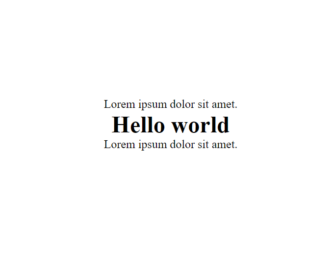

What is the difference between Margin, Border, and Padding?
The box model?
The margin, border and padding can also be referred to as 'The box model'. It is the space or spaces which surrounds an element or content, and the term is used when talking about design and layout.
What does the box model look like?

What is the border, what does it do and how do you use it?
The border is the edge your element of content. Borders can be used for many reasons but I use them either for styling an element or to help
me see where my element is currently positioned. Borders can be added all around your element or even just on one side of your choice!
To use border select a element in your css file and and enter "border: 1px solid black;" or border-"top" or border-"(which ever side you want)"
to add a border there.
In the first image below youll see that there is a txt element, underneath there is a h1 element, and at the very bottom
another txt element. In the second image added "border: 1pt solid black" to the h1 element.


What is padding, what does it do and how do you use it?
The padding is the first layer of space around an html element or content. Its like the padding of a fragile box to keep the contents in it safe. The padding will create a layer of space between the content itself to the border of the content. You can add padding to the top of the content, to the bottom or all the way around. Its easy - in your css file, select an element to style and enter "padding: 100px(or another unit of your choice)". You'll see that there is a some sort of an unpenetrable space surrounding your element. If you want to see that space more clearly, give your content a border "border: 1px solid black", the space between the border and the content that you can see is the padding!
What is margin, what does it do and how do you use it?
The margin is the final surrounding space from around your border to other surrounding content or elements. Its like the perimeter of your content but doesn't exist unless you want it to just like the border or padding (some elements may have a default margin). It's also like an unpenetrable space and keeps a sort of boundary from outside the border to other elements. To use it select a element in your css file and enter "margin: (unit of your chocie)" to see it in action. You can also choose to add it to one side, twos sides or all!
Want to know more? Contact me!
Saia Maka
Email: makasiosaia@gmail.com
Mobile: 02041128983